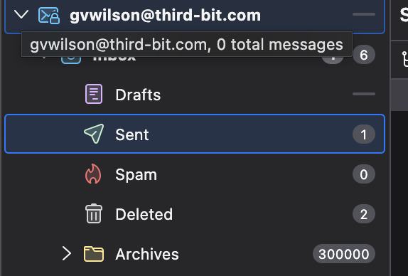

Three Hundred Thousand
As of 7:00 am this morning, Toronto time, I have exactly 300,000 messages in my email archive.

| 2020 | 2021 | 2022 | 2023 | 2024 | 2025 | 2026 | |||
| 2010 | 2011 | 2012 | 2013 | 2014 | 2015 | 2016 | 2017 | 2018 | 2019 |
| 2004 | 2005 | 2006 | 2007 | 2008 | 2009 |
As of 7:00 am this morning, Toronto time, I have exactly 300,000 messages in my email archive.

“Model collapse” describes the way machine learning models degrade when they are trained on their own outputs, which causes them to lose information about rare data and reduces the diversity of their outputs. I imagine that if your civilization has used ML for millions of years, your models will have collapsed to useless mushy pancakes. You will be desperate for novel data on which to train them, but where oh where shall you find it?
One solution, perhaps, is to be very, very careful to keep newly-intelligent species isolated from the rest of the galactic community so that they can create things that are genuinely new. Aliens’ need to escape from model collapse might therefore explain the Fermi Paradox.
Once they develop ML themselves, though, they will quickly fall into the same trap that you did. You will want to harvest every bit you can before they drown in slop (or destroy their homeworld’s climate, accidentally release some sort of engineered plague, and/or trigger a Kessler event that makes visiting rather difficult).
Watch the skies, my friends. Watch the skies…
I’ve often blogged about books I want to read that I don’t know enough to write; here’s another entry in that list:
I want ten chapters, each describing a study that an overworked VP Eng could feasibly implement to assess their software development team and practices.
In more detail:
Ten chapters, each about 15 pages long, because (a) I don’t think an overworked VP will read any more than that and (b) I think ten different studies will pretty much cover the possibilities.
Describing means both “here’s a template you can start from” (down to the level of specific questions in questionnaires and some Python scripts to analyze the data if the study is quantitative) and “here’s an explanation of the science behind it that someone with no training in psychology or the social sciences will be able to understand and will find persuasive”.
Feasibly implement means set up with a few hours of work given the template mentioned above. It also means having a rationale that’s comprehensible and acceptable to higher-ups. “We want to know if our developers feel fulfilled” is hard to sell to tech bros; “we want to get a handle on which parts of our AI spend are actually helping” is a lot easier, even if the questions and the analysis are the same.
Assess doesn’t just mean “measure quantitatively”. As I’ve said elsewhere, UX teams have a long history of using qualitative methods to answer interesting-to-capitalists questions in ways that are culturally acceptable in Silicon Valley.
So, who would write such a book? My first choice is probably too busy to do more than a single chapter (if that), but people who took part in It Will Never Work in Theory might find it interesting enough to contribute. I think it would be useful and timely, and a way to get researchers and practitioners to talk to each other. If this sounds like something you’d be interested in, please give me a shout.
The Unix command line is the most successful user interface ever built, and also the worst one we are stuck with. It was assembled over half a century, one tool at a time, by people optimizing for their own fingers on a keyboard. The result is overlapping responsibilities, inconsistent flags, and names that mean nothing to anyone who was not there when they were invented. That didn’t matter when the only consumers were people willing to memorize its quirks; it matters a great deal now that the principal consumers are people trying to understand what an LLM is doing on their behalf.
This post is a thought exercise: what a set of replacement tools that have more readable names and more consistent (and therefore more learnable) flags look like? This wouldn’t make any difference to the LLMs; the aim would be to make their actions more legible to users who aren’t command-line nerds.
One core design decision is to stop treating everything as a stream of bytes,
which forces every tool to re-derive structure. Two modern shells have already
done this. PowerShell built a pipeline that carries .NET objects,
not text. A command like Get-Process produces a stream of process objects; the
next command reads their typed properties instead of parsing columns. PowerShell
draws a hard line between data and display: ConvertTo-Json and ConvertTo-Csv
turn objects into data, while Format-Table and Format-List format objects
for the screen and are display-only: they must be the last command in a
pipeline, and piping their output into a data command produces garbage.
PowerShell also standardizes a set of common parameters (-Verbose,
-ErrorAction, -WhatIf, -Confirm) shared by every command. Its flaws are
the verbose Verb-Noun names, the case-insensitive abbreviable parameters, and
awkward gotchas like ConvertTo-Json defaulting to -Depth 2 and silently
flattening anything deeper.
Nushell goes further by making typed tables the standard. ls
returns a table of records; where, select, and sort-by reshape it by field
name; to json and to csv serialize it; from json and from csv parse it
back; into int and into string convert types, and so on. A pipeline like
ls | where size > 10mb | sort-by modified | to json therefore never has to
parse a text column. Nushell’s weakness is that it keeps the legacy command
names and their inherited flags, so the surface is still cluttered even though
the data is clean.
The design below is the synthesis: Nushell’s typed tables, PowerShell’s separation of data from display, neither system’s legacy names, and a standard way to interrogate tools to get their output schema.
--recursive,
--ignore-case, --reverse, --human, --quiet, --force,
--interactive, --help, --version.to json), never a mode hidden
inside a data command.| tool | emits | replaces |
|---|---|---|
list path |
{name, type, size, modified, mode, owner, group} |
ls, stat |
find path |
{path, type, size, modified} |
find, locate |
resolve path |
{path, canonical, target} |
realpath, readlink |
read path |
the file as a list of line records, or a string | cat, head, tail, tac, less, zcat |
search pattern |
{file, line, column, text} |
grep, egrep, fgrep, zgrep |
processes |
{pid, ppid, user, cpu, mem, command} |
ps |
usage path |
{path, size, files} |
du |
space |
{filesystem, size, used, available, mount} |
df |
system |
{os, kernel, hostname, arch, uptime} |
uname, hostname |
user |
{name, uid, gid, groups} |
whoami, id, groups |
time |
{now, utc, epoch} |
date |
environment |
{name, value} |
env, printenv, set |
interfaces |
{name, address, mac, state} |
ifconfig, ip addr |
connections |
{protocol, local, remote, state} |
netstat, ss |
mounts |
{device, mountpoint, fstype, options} |
mount, df |
logged-in |
{user, tty, host, since} |
who, w, last |
checksum path |
{path, algorithm, digest} |
md5sum, sha256sum, cksum |
These are the heart of the design. They work on any table and are the replacement for a large fraction of the text tooling.
| tool | what it does | replaces |
|---|---|---|
select field… |
keep named columns | cut, PowerShell Select-Object |
filter predicate |
keep rows matching a predicate | awk on columns, Nushell where |
sort field… |
sort by named fields | sort -k, sort -t |
unique field… |
drop duplicate rows | uniq, sort -u |
group field |
group rows by a field | awk grouping |
join right --on field |
relational join of two tables | join, comm |
count |
count rows (or a field’s values) | wc -l, uniq -c |
sum, mean, min, max field |
aggregate a numeric field | awk '{s+=$1}END{print s}' |
map expression |
compute a new field | awk '{print ...}' |
head N, tail N |
take first or last N rows | head, tail |
replace pattern replacement |
substitute text in a field | sed 's///', tr |
flatten |
unnest a nested field | jq flatten |
filter and map need a small expression language. The design keeps it
deliberately tiny—field access, comparison, arithmetic, and boolean
combinators—because a full programming language bolted onto a filter is how
awk happened.
| tool | output | replaces |
|---|---|---|
to table |
aligned text table for humans | column, fmt |
to json |
JSON | jq, ConvertTo-Json |
to csv |
CSV | ConvertTo-Csv |
to plain |
one field per line, for text pipelines | implicit text |
| new | old |
|---|---|
go |
cd |
copy |
cp |
move |
mv |
remove |
rm,rmdir |
create |
touch, mkdir with --directory, mktemp with --temporary |
link |
ln |
permit |
chmod, chown, chgrp via --mode, --owner, --group |
| new | old |
|---|---|
signal |
kill, killall, pkill |
monitor |
top |
run |
nice, timeout, nohup |
| new | old |
|---|---|
help |
man, apropos, whatis |
which |
which, whereis, type |
| new | old |
|---|---|
fetch |
curl, wget |
connect |
ssh |
send |
scp, sftp, rsync |
reach |
ping |
trace |
traceroute |
lookup |
dig, nslookup, host |
| new | old |
|---|---|
archive |
tar, cpio, zip via --create, --extract, --list |
compress and expand |
gzip, bzip2, xz, zip, unzip |
calc (and bc),
echo,
expr,
false,
seq,
sleep,
test,
and true.
| today | becomes |
|---|---|
ls -la |
list --long |
du -sh * |
usage --human |
ps aux |
processes |
cat f | grep x | wc -l |
search x f | count |
cut -d, -f1,3 |
select name, amount |
sort -t, -k3 -n |
sort score --numeric |
awk '$3 > 100 {print $1}' |
filter score > 100 | select name |
grep -ri foo . |
search foo --recursive --ignore-case |
find . -name '*.py' |
find . --name '*.py' |
curl -s url |
fetch url |
tar czf x.tgz dir |
archive dir --create --compress |
sha256sum f |
checksum f --algorithm sha256 |
jq '.items[]' f |
read f | from json | flatten |
Every producer has a shared option --schema, which makes it emit a table that
describes the fields it produces. list --schema, for example, returns:
| field | type | description |
|---|---|---|
name |
path | file or directory name |
type |
string | file, directory, or symlink |
size |
bytes | size in bytes |
modified |
timestamp | time of last modification |
mode |
string | permission bits |
owner |
string | owning user |
group |
string | owning group |
Because a schema is itself a table, the ordinary transformers and serializers
apply to it: list --schema | select field, type | to json yields the compact
machine-readable form, while list --schema alone renders it for a person. As
a result, a reader can learn what a command will emit before running it, using
the same vocabulary as any other data.
I’m thinking about extending this set of debugging examples with the more complex examples described below. I’d be very grateful for feedback: would they be useful? Would they be useful to you? What other examples could be included, or should be included instead of some of the ones I’ve outlined?
A command-line Python tool that reads application log files, normalizes each line, extracts structured fields, and loads them into SQLite for later querying.
What it does: walks a directory of log files, parses each line with a regex,
converts the timestamp, extracts level/component/message, and inserts a row
per line into a logs table.
Components: a scanner, a parser/normalizer, a loader, and a query/report module that runs after loading.
The bug: the normalizer converts timestamps to UTC and stores them as naive
datetimes, while the query layer assumes local time and compares against naive
datetime.now(). Reports are shifted by the local UTC offset. Secondarily,
the regex silently drops lines it doesn’t match, but the loader reports “N
lines loaded” from the file’s own count, so missing events are invisible.
What it teaches: the wrong rows are present and plausible; nothing raises. The two timezone assumptions live in different files, and the dropped-line bug only shows up as a shortfall the learner has to notice rather than an error.
A Python crawler using httpx with a thread or asyncio worker pool that
fetches pages, normalizes URLs, deduplicates by content hash, and records pages
and links in SQLite.
What it does: starts from seed URLs, fetches pages concurrently, extracts
links, and stores each page body plus a pages/links relationship in
SQLite.
Components: a frontier/queue, a fetcher pool, a link extractor, a URL normalizer, and a storage layer.
The bug: the “have I seen this URL?” check and the subsequent insert are not atomic, so two workers can both pass the check and fetch/store the same page (duplicate rows, double work). Separately, URL normalization (stripping trailing slashes, fragments, and normalizing case) is applied in the fetch path but not in the link-extraction path, so the same page is keyed under two URLs.
What it teaches: it is a race, so it reproduces intermittently and only under concurrency. The normalization mismatch produces near-duplicate rows that look like different records at a glance.
A FastAPI application with SQLite persistence and an htmx front end for a small library: books, members, loans, and holds.
What it does: serves pages listing books and loans, and endpoints to check a book out to a member, return it, and place holds. htmx renders table rows and status fragments server-side.
Components: route handlers, a data-access layer, SQLite models, htmx templates, and a small availability helper used by both listing and checkout.
The bug: checkout/return is not wrapped in a transaction, so the copy count is
decremented, then a later INSERT (the loan row) fails, leaving the count
wrong. The loan list also issues one query per row (N+1), which is fine until
the table grows. Availability is derived from loans in the listing path but
from a cached copy count in the checkout path, and the two drift.
What it teaches: the transaction bug corrupts state that looks consistent until a specific failure; the N+1 only bites under load; the availability discrepancy is a disagreement between two places that each look individually correct.
A Python worker pool backed by a SQLite jobs table that claims, runs, and
marks jobs done, with retry and exponential backoff.
What it does: producers insert jobs; N workers poll for pending jobs, claim one, run it, and update its status; failures are retried with backoff up to a maximum attempt count.
Components: an enqueue function, a claim loop, a runner, and a retry/settle routine.
The bug: claiming is a SELECT followed by a separate UPDATE ... WHERE
status='pending', not an atomic claim, so two workers can claim the same job.
The retry logic also treats permanent failures (a job that always raises the
same way) as retryable until the cap, then marks them “failed”, while a
transient timeout path re-enqueues a job that was in fact already completed.
What it teaches: duplicate execution and dropped jobs both manifest as count mismatches across a run, and the two bugs interact: retries resurface jobs the duplicate-claim bug already ran.
A multi-step checkout workflow where an Alpine.js front end holds state across steps and a FastAPI backend validates and submits the order.
What it does: the client advances through steps, applying a discount code and stock availability checks as it goes; the final submit posts the whole order to the server, which re-validates.
Components: Alpine components per step, a client-side cart/discount store, and FastAPI endpoints for validation and order submission.
The bug: client-side validation and server-side validation disagree: the discount is applied client-side for display but not re-applied server-side, and an out-of-stock item passes the client check (the client’s stock number is stale) and only fails at submit. Alpine state is not reset when the user navigates back and starts a new order, so a stale discount or address leaks in.
What it teaches: the UI shows a valid-looking order that the server rejects, and the leak is state the learner can’t see in the markup. The two validation layers are in different languages and files.
A Python command-line tool that reads SQLite, groups records into day/week/month buckets, and emits CSV or HTML.
What it does: runs aggregation queries with a chosen granularity, formats bucket labels, and writes the result to a report file.
Components: a query builder, a bucket/label formatter, and an output writer.
The bug: the aggregation query uses inclusive/exclusive boundaries or naive vs. UTC datetimes differently from the label formatter, so records landing exactly on a boundary are double-counted in one bucket and omitted from the next, and the label’s date is off by one. The two bucket definitions live in separate functions.
What it teaches: totals look plausible but don’t sum to the source row count, and the error only appears for records on exact boundaries (a small, intermittent-looking slice of the data).
A Python command-line tool that walks a source tree, content-hashes files, deduplicates, and copies changed files into a backup directory while recording a manifest in SQLite.
What it does: scans the tree, hashes each file, compares against the manifest, and copies new/changed files, updating the manifest.
Components: a walker/scanner, a hasher, a differ, and a copier/manifest updater.
The bug: the tool scans, then copies, with no snapshot in between, so a file changed between the scan and the copy is copied in a torn state or missed entirely. The dedup key is the content hash alone, while the manifest records path + mtime, so an empty file (or a file that became empty) is treated as unchanged because “missing” and “empty” collide.
What it teaches: the race is timing-dependent and only affects files touched during the backup; the empty-vs-missing collision silently skips a file the learner expected to be copied.
A Python script that reads a legacy SQLite schema and writes a normalized schema for the same data.
What it does: reads rows from several legacy tables and inserts them into new
tables with foreign keys, NOT NULL constraints, and unique indexes.
Components: a reader per legacy table, a transformer, and a writer with constraint handling.
The bug: insert ordering isn’t respected (child rows are inserted before their
parents, violating foreign keys) and legacy rows contain empty strings and
duplicates that violate the new schema’s NOT NULL and unique constraints, so
the load fails partway and leaves a half-migrated database.
What it teaches: the failure is a constraint violation deep in a bulk load, far from the code that read the offending row, and the partial state makes rerunning the migration unsafe without cleanup.
A Python daemon that polls a SQLite outbox table, sends each pending message
(email or HTTP), and marks it sent.
What it does: a loop selects unsent rows, sends them, and updates their status; on send failure it leaves the row pending for retry.
Components: a poller, a sender (SMTP/HTTP), and a status updater.
The bug: send-then-mark is not atomic, so a crash or timeout after the send
but before the UPDATE leaves the row pending, and the message is sent again
on the next poll. There is no idempotency key on the receiving side, so a slow
or duplicated request produces duplicate deliveries.
What it teaches: the duplicated side effect (an extra email) happens outside the process, on the recipient’s side, and the learner sees a “pending” row that looks like it was never sent.
A Python command-line tool (argparse or typer) that loads plugins from a directory; plugins register subcommands and share a config object.
What it does: discovers plugin modules, imports them, collects the subcommands each registers, and dispatches a chosen subcommand.
Components: a plugin loader, a registry, a shared config object, and the dispatch/argument parser.
The bug: the shared config is a mutable dict aliased into every plugin; one plugin mutates it and another reads the mutated value, so behavior depends on plugin registration order. A plugin that registers a subcommand whose name collides with an existing one silently overwrites the earlier registration.
What it teaches: the bug moves with load order and only appears when a specific combination of plugins is installed; the overwrite leaves no error, just a missing command.
A dashboard where htmx polls a FastAPI endpoint for JSON and Alpine.js renders charts, backed by SQLite sample storage.
What it does: a collector writes samples to SQLite; a FastAPI endpoint returns the latest samples as JSON; an htmx-triggered poll fetches them and Alpine components render the charts.
Components: a sample collector, a query endpoint, htmx polling markup, and Alpine chart components.
The bug: timestamp comparison uses the browser’s wall clock against server/DB timestamps, so clock skew makes samples appear duplicated or missing at the boundary. An htmx poll response can arrive out of order and update the DOM after a newer response, overwriting fresh data with stale data.
What it teaches: both bugs are timing/ordering problems that don’t reproduce deterministically, and the symptom (a chart briefly showing old values) looks like a rendering glitch.
A FastAPI application with SQLite and an htmx front end that logs users in, issues a session token, validates it in middleware, and invalidates it on logout.
What it does: login verifies credentials and issues a token (stored in a sessions table); middleware validates the token on each request; logout marks the session invalid.
Components: login/logout routes, session/token storage, validation middleware, and a refresh path.
The bug: token expiry is checked in the middleware, but the refresh path extends a different record (or logout invalidates the session row without invalidating already-issued tokens), so a session that should be expired or logged out still authenticates. A race between the expiry check and request handling lets a request past just as the token lapses.
What it teaches: the security-sensitive behavior only fails at the exact expiry/logout boundary, and the invalid state lives in a different table or code path from the check, so both sides look correct in isolation.
I’m old enough to remember when graphical user interfaces appeared on desktop machines in the 1980s. Many of them were wrappers around pre-existing programs; while some programmers (including my younger self) sneered at them for being pointless eye candy, all of a sudden ordinary people didn’t have to remember a long list of obscure command-line spells in order to make computers do useful things.
I’m now old enough to remember when LLMs appeared in the 2020s. All of a sudden people didn’t have to learn how to write syntactically correct YAML or figure out which of Git’s eleventy jillion flags would safely and correctly do whatever they wanted to do. I’m now wondering whether “LLMs make it feasible for non-specialists who aren’t heavily invested to use X” is the same as “X’s interface never actually needed to be so user-hostile”, and whether “talk through it with an LLM” is going to make complex software more accessible in the same way that GUIs did.
It took me the better part of a year to write Software Design by Example in Python. It would have had more impact and a wider readership if I’d done it a decade earlier, but I learned a lot along the way, and I’m proud of it.
It took less than ten minutes for DeepSeek to write this lesson explaining how a filesystem works. I told the LLM to read three of the existing lessons, then create one of similar length, depth, and style; it came back with working code and prose that’s as good as any first draft I might have created. I don’t know how well it would have done without my work to guide its pseudo-random number generation, but I expect I’m going to be thinking about this and its implications for quite some time.
I started work last year on an introduction to systems programming for data scientists. I assumed learners were comfortable with the material covered in the Carpentries workshops on the Unix shell and Python:
pwd; ls; cd; . and ..; rm and rmdir; mkdir; touch;
mv; cp; tree; cat; wc; head; tail; less; cut; echo;
history; find; grep; zip; man* and ? wildcards; shell variable with $ expansion; for loopfor and while loops;
if/else; with; defining and calling functions; sys.argv, sys.stdin,
and sys.stdout; simple regular expressions.The topics I outlined then were:
.venv sense)Before I start fleshing out the existing material, I’d like to figure out what else ought to be included. Possibilities include:
top, ulimit, and niceI would be very grateful for guidance: what do you think a (data) scientist who’s starting to manage their own system needs to know?